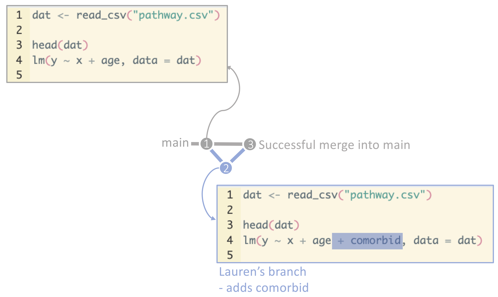
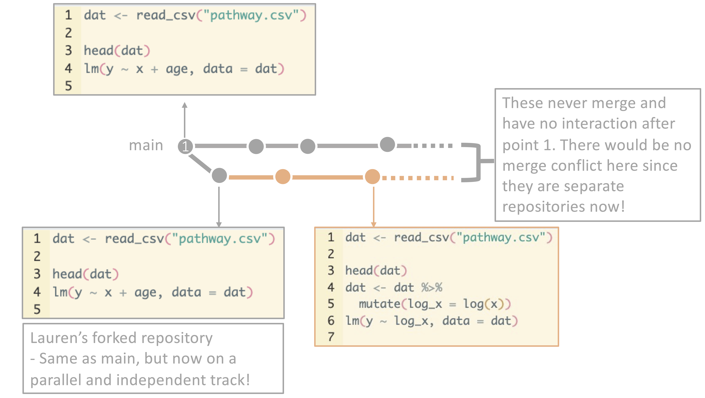

11 Miscellaneous git processes and tips
This page will walk you through a few more git processes that we haven’t covered!
11.1 Forking
Remember when we went through branching? Recall that branching is the process of creating a new branch where you can make changes to code without affecting the main branch. When you finished your changes, you merged your branch into main and deleted the branch. Branching is a critical tool for working with git repositories and ensuring that main remains functional and clean. Even if you do not merge your branch back in, the owner of the repository will see your branch, can take a look at what you are doing, and you can continue to collaborate with the members of the repository.
Branching: 
Forking is a similar process, but it is used when you want to make changes to someone else’s repository. When you fork a repository, you are creating a copy of the repository in your GitHub account. You can then make changes to the repository in your account without affecting the original repository. The owner of the original repository will not be a member of your forked repository, and this is essentially your own repository now. You can think about this as similar to receiving a google doc, downloading it, and saving it to your computer. The google doc is still there, the people collaborating with you on the google doc are still in that document, but now you have a completely separate document on your computer that is not a collaboration with the original google doc team in any way. This is a great way to contribute to open-source projects or to make changes to a repository that you don’t have write access to. It is also a great way to avoid reinventing the wheel - perhaps your colleagues developed a great suite of functions for cleaning malaria data, and you need something very similar for your dengue project. You can fork their repository, make changes to tailor these functions to dengue, and use their functions in your project.
Forking: 
Forking is core to the premise of git and the effort to move towards open-source software development. It allows for collaboration across your workplace, your field, and around the world for the sharing of code and ideas.
11.2 .gitignore
When you are working on a project, you will often have files that you do not want to track with git. Some examples may include: - identifiable data - non-publicly available data - preliminary results - personal information such as passwords - large files
You may put some of your data on git, but many people do not put data on git in order to preserve privacy protocols. This is particularly important if you have identifiable data or data that you received through a DUA or another non-publically available means - which precludes you from openly sharing these data on GitHub (just as you wouldn’t openly share them on OneDrive!). Decisions around data storage are a team decision and something that you will navigate together. Some teams store some data on Git in a private repository, others use shared drives for data and Git for code, and others keep them in their repository but to not push them to GitHub.
You may also have files that are generated by your code, like a .csv file that contains the preliminary results of your analysis. You do not want to track this file with git because it is not necessary to share this information with others.
There are also size limitations to file storage on GitHub, as we discussed. Very large files should not be tracked and will not be supported!
The theme here is that there are many different types of things that you may want to keep in your repository, but may not want to push to GitHub for privacy or size reasons. It can feel overwhelming to think about where to store these files if you can’t put them on git. But, you can keep them in that same repository folder AND not push them to GitHub using a .gitignore file to tell git to ignore these files.
Your .gitignore file is a list of files that git is not tracking. Whenever you add files in your repository, for example, git will ignore the files listed in your .gitignore file. This is a great way to keep your repository clean and organized.
Here’s an example:
In this example, git will ignore any files that end with .sql or .sqlite, as well as any files in the build folder whenever the user stages, commits, and pushes files their repository! This is a handy thing to think about if you decide to store most things within your repository directory, but may be irrelevant if you want everything in your repository to be pushed to GitHub.
11.3 Rolling back changes
One of the other advantages of git and GitHub that we haven’t talked much about is the ability to roll back changes. For example, maybe you have committed a few iterations of code and you realize that the code you wrote 3 commits ago was actually the best version. You can roll back to that commit and start from there. This is a great way to experiment with code and try new things without worrying about losing your work. To do this, you can either use git checkout to check out a previous commit, or you can use git revert to revert a commit. This process is a bit complicated, but there is a great walk through here.
11.4 And if all else fails…
Remember that git is a tool that can help you track versions, examine changes, and collaborate with others. If you get stuck, never forget that its ok to delete your repository and start over - we have all been there! There are many comics and memes about git and the struggles that come with it - and the acceptability of burning down your repository and starting over!
Here is our favorite comic about this!
Remember that you are not alone in your struggles and that there are many resources available to help you - and it is ALWAYS okay to just save your code elsewhere for a moment and start over.